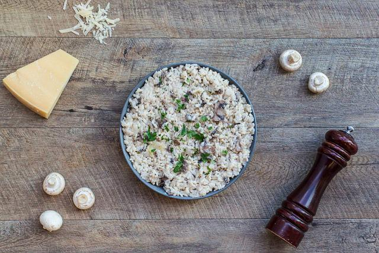

Classic Risotto

Description
Originating from the Italian cuisine, the risotto is a versatile dish offering the opportunity for
you to get creative. A risotto dish may include aromatics such as garlic or onions, a type of poultry or seafood, and some herbs for
garnishing. At its core, however, the risotto generally includes a few base components. These are broth,
butter, and starchy medium-grain or short grain rice like Arborio or Roma.
Ingredients
- Rice
- Broth (Whichever you prefer)
- Butter
- Salt to taste
Steps
- Bring pot of broth to a simmer.
- Melt 1 tbsp of butter in another pot.
- Stir in rice with the pot containing the melted butter for ~1 minute
- Gradually add the heated stock to the rice. Pour in a ladle of stock into the
pot containing the rice. Once the rice has abosorbed that added ladle, add another ladle-fool
- Repeat step 4 for ~20 minutes or until are tinder but still have a little firmness.
- Stir in 2 tbps of butter and season to taste.
- Ready to Eat!
Home